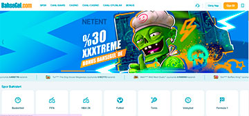
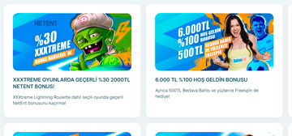
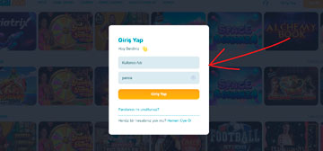
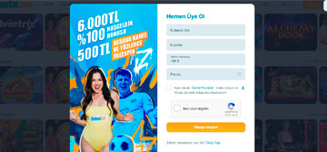
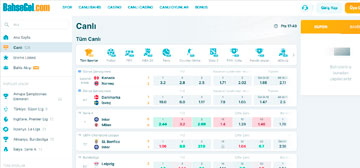
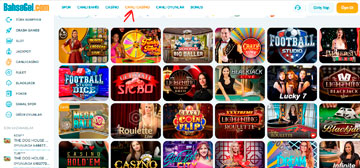
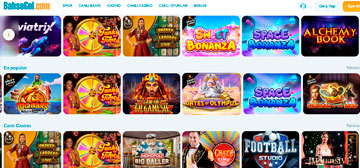
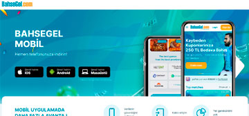

Türkiye’de sanal bahis konusunda akla gelen sitelerden biri olan Bahsegel, 2011 yılından bu yana doğru bir tabirle kusursuz sanal bahis hizmeti verir. Yüksek güven faktör puanı ve aynı zamanda herhangi bir platformda hakkında şikayet olmaması, ne denli kusursuz bir hizmet verdiğinin en önemli göstergesidir. Para transferleri başta olmak üzere birçok konuda son derece hassas davranan bu firma, yatırımcıların memnuniyeti ve güvenli bir ortamda hizmet alabilmeleri adına büyük çaba sarf eder.
Bahsegel, yatırımcılarının sadece bahis yatırımları değil aynı zamanda yaptıkları diğer birçok özelinde çeşitli bonuslar sunar. Sunmuş olduğu bonuslar ise firmanın ne denli yatırımcılara destek olmak istediğini gösterir. Sunulan bu bonuslar sayesinde yatırımcıların birden fazla işlem türü özelinde bonus kazanabilirler. Örneğin; para yatırma işlemleri nedeniyle bonus kazanmak söz konusu iken, bahis yatırımları sonucunda yaşanan kayıp durumlarında da telafi bonusu alınabilir. Böylelikle karşınıza çıkacak olan birçok bonus türü vardır.

Bahsegel'in yatırım bonusu, yeni ve mevcut oyuncuların para yatırma işlemlerine belirli bir yüzde oranında ek bonus kazanmalarını sağlayan bir teşviktir. Bonus miktarı yatırılan tutara göre değişebilir ve belirli şartlar altında kullanılabilir.
Yatırım Bonusu
Netent Oyunlarında yapılan her para yatırma işlemi için %30
oranında ve 2.000 TL’ye kadar bonus kazanabilirsiniz.
Her para yatırma işleminiz için 100 freespin
kazanabilirsiniz.
Para yatırma işlemleriniz için %15 oranında üst limit
olmadan bonus kazanabilirsiniz.
Kripto para ile yapılan yatırım işlemleriniz özelinde %30
oranında bonus kazanabilirsiniz.
İlk defa kripto para ile yapılan para yatırma işleminizde
%200 oranında bonus kazanabilirsiniz.
Kayıp Bonusu, Bahsegel'te kayıp yaşayan kullanıcılara sunulan bir bonus türüdür. Kullanıcılar belirli bir süre içindeki kayıplarının belirli bir yüzdesini geri alabilirler. Bu bonus, kullanıcılara kayıplarını minimize etme ve daha fazla bahis yapma şansı vererek oyuncuların deneyimlerini artırmayı amaçlamaktadır.
Kayıp Bonusları
Casino kategorisinde her gün 1.500 TL’ye kadar kayıp
bonusundan faydalanabilirsiniz.
Kaybeden kuponlar için 250 TL tutarında bedava bahis
alabilirsiniz.
Haftalık Bonus, Bahsegel'te haftalık olarak verilen bir bonus türüdür. Bu bonus, haftalık olarak yapacağınız para yatırma işlemlerine bağlı olarak hesabınıza yüklenir. Bonusun miktarı yatırım tutarına ve hesap türüne göre değişebilir.
Haftalık Bonuslar
Bahsegel VIP Club ile ne kadar çok yatırım yaparsanız, o
kadar çok üyelik puanı kazanır ve haliyle çok daha fazla
ayrıcalık, aynı zamanda bonustan yararlanabilirsiniz. Her
hafta üyelik seviyenize özel bonusları
görüntüleyebilirsiniz.
Hafta sonu Casino kategorisinde 1.000 TL üst limitli %50
oranında Casino bonusu alabilirsiniz.
Üyelik Bonusu, yeni kayıt olan kullanıcılara sunulan bir bonus türüdür. Bonusun çevrim şartlarına uyulması durumunda kazanç sağlanabilir.
Üyelik Bonusları
İlk defa Bahsegel’e üye olanlara özel %100 oranında 6.000 TL
tutarında bonus kazanabilirsiniz. Ayrıca bu bonusu ilk 3
para yatırma işleminize bölebilirsiniz.
Sisteme üye olurken kaydetmiş olduğunuz doğum gününüze özel
bonus kazanabilirsiniz.

Özel Bonuslar, Bahsegel'in düzenli olarak sunduğu ve belirli bir süre için geçerli olan ekstra bonus teklifleridir. Bu bonuslar genellikle spor bahisleri, casino, canlı casino veya diğer oyun kategorilerinde kullanılabilir.
Özel Bonuslar
Playson Non-Stıp ile 1.000.000 euro ödül havuzlu bonus
kazanabilirsiniz.
30.000.000 euro ödüllü havuz bonusu ile Pragmatic Play
oyunlarında yapmış olduğunuz yatırımlar için sıralamaya
girerek kazanç elde edebilirsiniz.
180.000 Euro ödüllü Playtech Rulet ödülü ile sınırlı bir
süre içerisinde binlerce TL elde edebilirsiniz.
Her Cuma gerçekleştirilen Playtech ödüllü sorular etkinliği
ile 2.000 USD’ye kadar kazanç elde edebilirsiniz.
Bahsegel Giriş
Bahsegel’e giriş yapıp, bahis yatırımlarınızı gerçekleştirmek istiyorsanız, öncelikle üyelik işlemlerinizi tamamlamanız gerekir. Üyelik işlemlerinin tamamlanmasının hemen ardından aşağıdaki adımlar özelinde giriş işlemleri sağlanabilir:
İlk olarak “Giriş Yap” seçeneğine tıklayınız.
Hemen ardından açılan pencerede üyelik işlemlerinde belirlemiş olduğunuz kullanıcı adınızı yazınız ve ardından şifrenizi giriniz.
Eğer siteye üyelik işlemlerinden sonra ikinci defa giriyorsanız, bir doğrulama SMS’i ya da e-posta alırsınız.
Bu doğrulamayı yapmanızla birlikte sisteme giriş yapabilirsiniz.
Hemen sağ üst köşedeki “Para Yatır” kısmından bakiye yükleyebilirsiniz.
Ardından da üst kısımda ya da menüde bulunan kategorilerden de dilediğiniz bahis yatırım seçeneğini kullanabilirsiniz.

Bahsegel Yeni Adresi
Bettilt'in yeni adresi ile erişime devam edin ve en yeni bahis ve oyun seçeneklerine anında ulaşın.
Bahsegel yeni adreslerini ise aşağıdaki kaynaklardan edinmeniz mümkün olacaktır:
Sitemiz: Bahsegel’in en önemli ve en güvenli adres kaynaklarından biri sitemizdir. Adres değişiklikleri ilk olarak tarafımıza iletilir. Buna binaen de yeni adres doğrudan siz değerli yatırımcılarla paylaşılır.
Bahsegel Sosyal Medya: Bahsegel’in Twitter, Instagram, Facebook, Telegram ve Whatsapp gibi sosyal medya hesaplarını yakından takip ediyor olmanız, her an yeni adreslere ulaşabilmeniz anlamına gelir. Bu kaynaklardan her an yeni adres paylaşımı yapılmaktadır.
SMS ya da E-posta: Cep telefonu bilgileriniz güncelse ya da e-posta adresiniz Bahsegel’e kaydetmiş olduğunuz adresle uyuyorsa, yeni bir giriş adresi anında tarafınıza iletilir.
Mobil: Bahsegel’in mobil uygulamasını indirerek hem yeni adresi edinebilir hem de giriş adresi aramak gibi bir problemi ya da uğraşı doğrudan ortadan kaldırabilirsiniz.
Bahsegel Kayıt
Bahsegel’e kayıt işlemleri, eşsiz bir bahis dünyasının kapılarını aralamanız anlamına gelmektedir. Kayıt işlemleri için de aşağıdaki talimatları yerine getirmeniz yeterli olacaktır:
İlk olarak “Üye Ol” seçeneği ile direkt olarak ön üyelik formunu açmanız önemlidir.
Ön üyelik formunda kullanıcı adınızı belirlemeniz, e-posta adresini tanımlamanız, cep telefonu numaranızı girmeniz ve parolanızı belirlemeniz gereklidir.
Hemen ardından onay verip, gerekli doğrulamaları yaparak üyelik sürecini başlatabilirsiniz.
Bu adımda direkt olarak bahis sistemi karşınıza çıkacaktır ancak bu sistemden yararlanmak adına öncelikle eksik olan üyelik bilgilerinizi tamamlamanız gerekir.
Eksik olan üyelik bilgilerinin tamamlanmasının hemen akabinde doğrulama işlemleri başlar.
Kimlik bilgilerinin doğrulanması, adres bilgilerinin doğrulanması ve isteğe bağlı olarak da kredi kartı bilgilerinizin doğrulanmasının hemen ardından üyelik süreci başlayacaktır.
Artık “Para Yatır” butonuna tıklayıp, bu ekrandan para yatırdıktan hemen sonra bahis yatırımlarınızı gerçekleştirmeniz mümkün olacaktır.

Hesap Aktivasyonu ve Hesap İptali
Hesap aktivasyonu, Bahsegel’de yatırım yapabilmeniz adına en temel süreçlerden biridir. Bu noktada hesabınız birçok açıdan doğrulamaya tabi tutulur ve aktivasyon işlemleri şu şekilde ilerler:
Kimlik Bilgilerinin Doğrulanması
Bahsegel bünyesinde sadece gerçek kişileri ve yatırımcıları bulundurmak ister. Bu nedenle sisteme tanımlanan her kimlik bilgisinin doğruluğu, hesap doğrulamanın ilk bölümü olan kimlik doğrulanması bölümünde yapılır. Bu bölümde yatırımcılardan kimlik, ehliyet veya pasaport gibi bilgilerle doğrulanma talep edilir. Beyan etmiş olduğunuz belgeler üçüncü taraf şahıslarla herhangi bir şekilde paylaşılmaz.
Adres Bilgilerinin Doğrulanması
Bahsegel yasal yükümlülükler nedeniyle her üyesi için kimlik doğrulaması kadar adres doğrulaması da yapması gerekir. Yatırımcılar gerek fatura gerek ikametgah belgesi gerekse banka hesap dökümü ile doğrulama işlemlerini kolaylıkla yapabilirler.
İsteğe Bağlı Olarak Kredi Kartı Doğrulaması
Eğer kredi kartınızla Bahsegel’de bakiye yükleme işlemi yapmak istiyorsanız, mutlaka kredi kartı doğrulaması yapmanız gerekir. Kredi kartının size ait olduğunu ispatlamadan bakiye yükleme işlemi yapmanız söz konusu değildir.
E-posta Doğrulaması
Bahsegel bünyesinde belirtmiş olduğunuz e-posta adresinin doğrulanması adına ilk olarak hesabınıza gönderilen aktivasyon linkine tıklamanız gerekir. Bu sayede belirtmiş olduğunuz e-posta adresinin tarafınızca yönetilen bir adres olduğu Bahsegel sistemi tarafından doğrulanır.
Cep Telefonu Doğrulaması
Bahsegel’in cep telefonu ile doğrulama sistemi özelinde tarafınıza gönderilen SMS doğrulama kodunun ilgili ekrana girilmesi, doğrulama işlemlerinin gerçekleştirilmesine imkan tanıyacaktır.
Spor Bahisleri
Bahsegel’in “Spor Bahisleri” bölümünde yüksek oranlara sahip olan binlerce yatırım seçeneği ve onlarca spor branşı sizi karşılar. En az %50 oranında, diğer platformlara göre çok daha yüksek bilgiler karşınıza çıkacaktır.
İzleme Listesi
Bu kısımda karşılaşmalara dair yayınları takip edeceğiniz
alanlar bulunur ve yayını olan her karşılaşmayı bu alandan
takip edebilirsiniz.
Bahis Akışı
Muhtemel kazanç, oran ve bahis saatine göre size en yakın
spor bahis seçeneklerinin sunulduğu bu alanda, bahis yatırım
seçeneklerinin akışına göre hareket edebilirsiniz.
Popüler Ligler
Ülkemiz, Avrupa, popüler spor organizasyonları gibi birçok
duruma karşın gündemdeki en popüler bahis yatırım
seçeneklerine bu kısımdan ulaşabilirsiniz.
Tüm Sporlar
Bahsegel bünyesindeki tüm spor dallarına (futbol, basketbol,
hentbol, voleybol, tenis, masa tenisi, boks, dövüş sporları,
motor sporları, e-sporlar ve sanal sporlar gibi daha birçok
spor bahis seçeneğine) bu kısımdan hızlıca erişim
sağlayabilirsiniz.
Kupon
Kupon kısmından aktif olarak seçtiğiniz karşılaşmalar ve
karşılaşma tahminlerini takip edebilirsiniz. Bu bölüm
sayesinde karşılaşmalara dair gerçekleştirmiş olduğunuz
tahminleri yenileyebilir veya düzenleyebilirsiniz.
Bahislerim
Bu kısımdan aktif olarak devam etmekte olan ve kazanma şansı
olan tüm bahis yatırımlarınızı görüntüleyebilirsiniz.
Canlı
Canlı bölümü ile aktif olarak oynanan karşılaşmalara dair
tahmin seçeneklerine ulaşabilirsiniz.
Bahis Yapmanın 5 Adımı:
Bahsegel hesabınıza giriş yapın ve hesabınıza para yatırın.
Bahis bölümüne gidin ve istediğiniz spor dalını seçin.
Oynayacağınız karşılaşmayı seçin ve bahis seçeneklerine göz atın.
Bahis yapmak istediğiniz seçeneği işaretleyin ve bahis miktarını belirleyin.
Bahis kuponunu onaylayın ve bahsinizi tamamlayın.
Bahsegel Canlı Bahis
Canlı bahis bölümünde, spor bölümü ile aynı spor branşlarına ulaşmanız söz konusudur. Bu alanda oranlar ya da tahmin seçenekleri her an değişebilir. Karşılaşmaları takip etmek, izlemek ve Bahsegel tarafından canlı bahis alanında sunulan istatistiklerden yararlanmak son derece önemlidir. Canlı bahis alanında tüm bahis seçeneklerine hızlıca ulaşabileceğiniz bir bölüm söz konusudur. Aktif ve direkt olarak yatırım yapabileceğiniz tüm karşılaşmalar doğrudan karşınıza çıkacaktır.
Bahsegel Casino ve Slot Makineleri
Bahsegel’in eşsiz bir Casino alanı vardır ve bu eşsiz Casino alanı yatırımcıların birçok fırsattan yararlanmalarına yol açar. Eşsiz Casino alanının içerisinde yer alan slot oyunları ise yatırımcıların en önemli gelir kaynakları arasında yer alır.
Bahsegel’in slot kategorisine dair yatırım seçenekleri ise şunlardır:

Slot Oyunları
3, 5, 7 ve farklı birçok makara sistemi özelinde yatırım yapılan oyunlardır. Slot oyunlarındaki asıl amaç, ödül tablosundaki kombinasyonları makara sisteminde eşleştirebilmektir.
Sağlayıcılar
Popüler Oyunlar
Plank Gaming, Games INC, Netent, Evulotion, Spinomenal, EGT,
Playson
Khan’s Wild Quest, Gex, Book of Dino, Dwarfs Fortune, Beast
Mode, Hot Slot 777 Crown
Jackpot Oyunları
Büyük ödüllerin olduğu kombinasyonları yakalamak gibi asıl amacı olan bu oyunda yatırımcılar ödül tablosuna göre büyük ödülleri büyük risklerle elde etmek durumundadırlar.
Jackpot Raiders, A Night in Paris, Mega Glam Life, The
Slotfather, Dragon Kings, Divine Fortune, Mega Joker,
Jackpot Jamba, Dragon Chase
Rulet Oyunları
Dönen bir çark içerisinde rastgele noktalarda durup ödül sağlayan rulet oyunlarında, yatırımcılar topun nerede duracağını tahmin etmek durumundadırlar.
Sağlayıcılar
Popüler Oyunlar
Games INC, Fazi, Evolution, Netent, Wazdan, EGT, Play’n Go, Ezugi, Relaxgaming, Playtech, G Games, Bgaming, BetSoft, Habanero
Bahsegel Roulette, Türkçe Lightning Rulet, Turbo Rulet, 10 P Rulet, American Rulet
Blackjack Oyunları
21 sayısını tarafınıza iletilen kartlar ve masadan kart elde etmeyle yakalamaya çalışmak gibi bir amaç olan bu oyunda yatırımcılar, kasa veya diğer oyuncularla bir kart savaşı içerisinde olurlar.
Sağlayıcılar
Popüler Oyunlar
Games INC, Evolution, NetEnt, Play’n Go, Relaxgaming, Ezugi, Red Tiger, Playtech, Wazdan, Swintt, G Games, Gaming Corps
Ezugi Turkish Blackjack, Lightning Blackjack, Blacjack A, Infinite Blackjack, A Blackjack, Black Jack, All Bets Blackjack

Poker
Kartlardan beşli seri elde etme amacı olan bu oyunun, birçok türü bulunmaktadır. Özellikle Amerikan, Rus, Türk ve daha birçok tür yatırımcıların karşılarına çıkar.
Video Poker, Texas Holdem Bonus, Amerikan Gold Poker, 2 Hand Casino Holdem, Amerikan Poker 2,
Trey Poker, Oasis Poker
Sanal Sporlar
Sanal spor oyunlarının olduğu ve bilgisayar algoritmalarının şans odaklı spor karşılaşmalarına imza attığı, bu noktada ise yatırımcıların sadece tahminlerde bulundukları bir yatırım türüdür.
Casino alanında yer alan; Poker, Slot, Blackjack, Rulet, kart, masa ve zar oyunlarının, canlı bir bahis ortamında yatırım yapıldığı bölüme canlı Casino alanı denir. Bu alanda özel Türkçe sunum kurpiyerler, birçok oyun türü özelinde karşınıza çıkar. Bunun yanı sıra farklı dil seçeneklerinde de oyun sunumları gerçekleşir.
Popüler Oyunlar:
Monopoly Big Baller
Crazy Time
Football Studio
Immersive Rulet
Footbal Studio Dice
Gold Bar Rulet
Ultimate Sicbo
Lucky 7
Crazy Coin Flip
Casino Holdem Poker

Bahsegel Finansal İşlemler
Bahsegel’de finansal işlemler muhteşem bir hızla ilerler ve gerek para yatırırken gerekse para çekerken son derece hızlı bir şekilde sonuç almak söz konusu olur. 0-10 dakika ila 0-20 dakika arasında tüm finansal işlemlerin ortalama süreleri söz konusudur.
Para Yatırma
Minimum Yatırım, TL
Maksimum Yatırım, TL
Havale
100
100.000
Papara
50
50.000
Payfix
25
50.000
Kredi Kartı
50
1.000
Mefete
25
20.000
Kripto Paralar
50
20.000
QR Kod
50
1.000
Jeton
50
50.000
Paybol
25
50.000
Popypara
50
50.000
Para Yatırma:
“Para Yatır” butonuna tıklayın.
Ardından açılan sayfada para yatırma seçeneklerinden birini seçin.
Hemen ardından tutar girişi yapın.
Uygun bonuslardan birini seçin.
Para yatırma yöntemine dair doğrulama işlemlerini tamamlayın.
Böylelikle hesabınıza para yükleme işleminiz başarıyla gerçekleşmiş olacaktır.
Para Çekme
Minimum Çekme
Maksimum Çekme, TL
Havale
100 TL – 100.000 TL
100.000
Papara
100 TL – 50.000 TL
50.000
Payfix
100 TL – 200.000 TL
200.000
Kredi Kartı
Kredi Kartı ile Para Çekilmez
Mefete
50 TL – 50.000 TL
50.000
Kripto Paralar
200 TL – 100.000 TL
100.000
QR Kod
QR Kod ile Para Çekilmez
Jeton
50 TL – 20.000 TL
20.000
Paybol
50 TL – 20.000 TL
20.000
Popypara
Popypara ile Para Çekilmez.
Para Çekme:
Bahsegel hesabınıza giriş yapın.
Hesabınızın sağ üst köşesindeki “Hesabım” bölümüne tıklayın.
Para çekme seçeneğine tıklayın.
Çekmek istediğiniz miktarı girin ve çekme yöntemini seçin.
İstenen bilgileri girin ve para çekme talebini onaylayın.
Talebiniz onaylandıktan sonra, belirtilen süre içinde paranız hesabınıza yatırılacaktır.
Bahsegel Güvenilir Site mi?
Bahsegel, Türkiye genelinde güvenlik skoru en yüksek firmalardan biridir. 9,9’luk güven skoru ile tüm yatırımcılarının gönül rahatlığı ile yatırım yapmaları adına güvenilir bir bahis ortamı sunar.
Curacao JAZ8048-2014034 lisans numarası ile Avrupa çapında hizmet verir. Bununla birlikte dünya genelinde birçok altyapı sağlayıcısından da özel lisanslara sahiptir.
Bahsegel Mobil
Bahsegel mobil, Bahsegel'in mobil cihazlar için optimize edilmiş sürümüdür ve tüm bahis ve casino oyunlarına erişim sağlar. Ayrıca Bahsegel mobil uygulaması da mevcuttur ve kullanıcılar uygulamayı indirerek mobil cihazları üzerinden Bahsegel'e erişebilirler.
Bahsegel mobil uygulamasını indirebilmek adına masaüstü sitede mobil simgesini, mobil sitede de “Mobil Uygulama” simgesini açmak gerekir.
Hemen ardından açılan sayfada cihazınız Android ise Android simgesini, IOS ise IOS simgesini seçmeniz önemlidir.
Ardından yaptığınız seçime göre karşınıza bir karekod çıkacaktır. Bu karekodu, cep telefonu kameranıza okutarak, direkt olarak indirme sayfasına doğru ilerleyebilirsiniz.
Hemen ardından cep telefonunuza indirdiğiniz uygulama dosyasını kurarak, Bahsegel mobil uygulamasını kullanmaya başlayabilirsiniz.

Bahsegel Tasarımı
Bahsegel en kolay çözülebilen ve yatırım yapılabilen bir tasarıma sahiptir. Yatırımcılar üst menüden tüm yatırım seçeneklerini bulabilirler. Bonuslar kısmından bonuslara göz atarak, “Para Yatır” kısmında talep ettikleri bonusları elde edebilirler. Sol alt kısımda ise direkt olarak canlı destekle bağlantı kurabilirler.
Belge İstiyor mu?
Bahsegel üyelik işlemleri sırasında üyelik bilgilerinizi doğrulama amacıyla tarafınızdan belge talep eder. Talep etmiş olduğu belgeler yasal süreler kapsamında saklanır ve hemen sonrasında da silinir. Bu belgeler üçüncü taraf şahıslarla paylaşılmamaktadır.
Bahsegel'e kayıt olmak için bahisçilerin aşağıdaki belgeleri sağlamaları gerekmektedir:
Kimlik kartının veya pasaportunun resmi (ön ve arka yüz)
Bir fatura veya banka ekstresi gibi son üç ay içinde düzenlenmiş bir adres teyidi belgesi
Bahis hesabının doğruluğunu onaylamak için kullanılan ödeme yöntemine ait resmi belge (örneğin, kredi kartı, banka havalesi gibi)
Bahsegel Destek
Bahsegel Destek ekibi, 7/24 hizmet veren bir müşteri destek ekibidir ve müşterilerin tüm sorularına ve sorunlarına yardımcı olmak için hızlı ve etkili bir şekilde yanıt verirler. Bahsegel Destek ekibine canlı sohbet, telefon ve e-posta yoluyla ulaşılabilir. Ayrıca, web sitesinde sıkça sorulan sorular bölümü de bulunmaktadır.
Canlı Destek
Canlı destek simgesinden, canlı destek birimi ile iletişime
geçebilirsiniz. Üyelik işlemleri, para yatırma ve çekme,
bonuslar, hesap iptali gibi birçok konuda destek
alabilirsiniz.
Canlı destekten edinmiş olduğunuz Whatsapp ve Telegram
hatlarına, genel konularda ve giriş adresleri konusunda
ulaşarak destek alabilirsiniz.
Sosyal Medya Destek
Bahsegel’in sosyal medya kanallarını takip ederek, özellikle
giriş adresleri, kampanyalar, promosyonlar gibi firmaya dair
önemli konularda destek alabilirsiniz.
Sıkça Sorulan Sorular
1. Bahsegel ödeme yapıyor mu?
Bahsegel, Türkiye’de en güvenilir ödeme yapan ve en hızlı ödeme yapan sitelerden biridir.
2. Bahsegel yasal mı?
Bahsegel tamamen yasal kurumlar tarafından denetlenen ve dünya genelinde yasal olarak tanınan bir firmadır.
3. Bahsegel giriş adresi neden değişiyor?
Bahsegel giriş adresinin değişmesinin en temel nedeni, BTK tarafından uygulanan erişim kısıtlamalarıdır.
Bahsegel Yorumlar
Hakan, 38
Bettilt bahis firmasında deneme bonusu mevcut değil fakat ilk yatırımımı yaptığım zaman
yatırımım ile beraber üyelik bonuslarım hesabıma tanımlandı ekstra olrak onus
sayfasında freespin hakkım olduğunu öğrendim ve canlı destek hattına bağlanarak
freespinlerimi talep ettim.
Polat, 32
Mobil versiyonu hakkında birkaç sorunum vardı, doğal olarak her defasında adres
değiştiği için direk olarak siteye giriş yapmakta zorluk çekiyordum. Bettilt bonus
sayfasında mobil versiyonu indirmek için link buldum ve uygulamayı indirdim, gerçekten
çok rahat ve basit bir şekilde artık giriş yapabiliyorum.
İdris, 26
Daha önce birçok sitede bahis oynadım kazanç sağladım zaman paramı vermediler,
ama Bettilt bahis sitesini tanıdıktan sonra gerçekten çok memnun kaldım yatırım
sağladım ve ardından kazanç sağladım çekim talebi verdiğim zaman hiçbir sorun
yaşamadan en kısa süre içerisinde kazancımı bana gönderdiler.
Resul, 25
Bettilt sitesinde en çok güven sorunu yaşamadığım için güveniyorum ve bahis almaya
devam ediyorum bu sitede. Herhangi küçük bir sorun yaşadığım zaman müşteri
temsilcilerine bağlanıyorum 7/24 aktif olarak çalışıyorlar, yazılı olarak sorun çözülmediği
zaman ise arama talebinde bulunuyorum ve gün içerisinde bana geri dönüyorlar.
Ali, 28
Bahis dünyasında şu an en önemli olan konulardan birisi güvendir ve buda eğer bir
sitenin lisansı varsa bir soru yaşamanız imkansız demektir sitede. Lisansı kontrol etmek
için ana sayfada lisansın logosuna tıklayarak aktif olduğunu kontrol edip ve emin
olabilirsiniz.
Baran, 55
Başka sitelerde bahis aldığım zaman yatırımların çok geç yatıyordu hesabıma, ama
Bettilt firmasında çok farklı çeşit yatırım yöntemi bulunmaktadır, Bettilt’te yatırım
sağladığım zaman depozitim anında hesabıma tanımlanıyor ekstra olarak ve
bonuslarımıda yatırımım ile beraber profilimde gözüküyor ve bu gerçekten çok kolaylık
ve bahis heyecanımı söndürmeden bahis alma imkanı veriyor.
Muhtar, 27
Uzun zaman önce Bettilt sitesine üye oldum ve bahis aldım, yıllardır bu sitede
oynuyordum ama son zamanlarda hesabımı kapatmaya karar verdim çünkü artık bahis
oynamak istemiyorum, müşteri temsilcilerine bağlanarak hesap kapatma talebinde
bulundum ve hiçbir sorun yaşamadan hesabımı kapattılar aynı zaman ne zaman
istersem aktif ede bildiğimi hakkında bilgi verdiler.